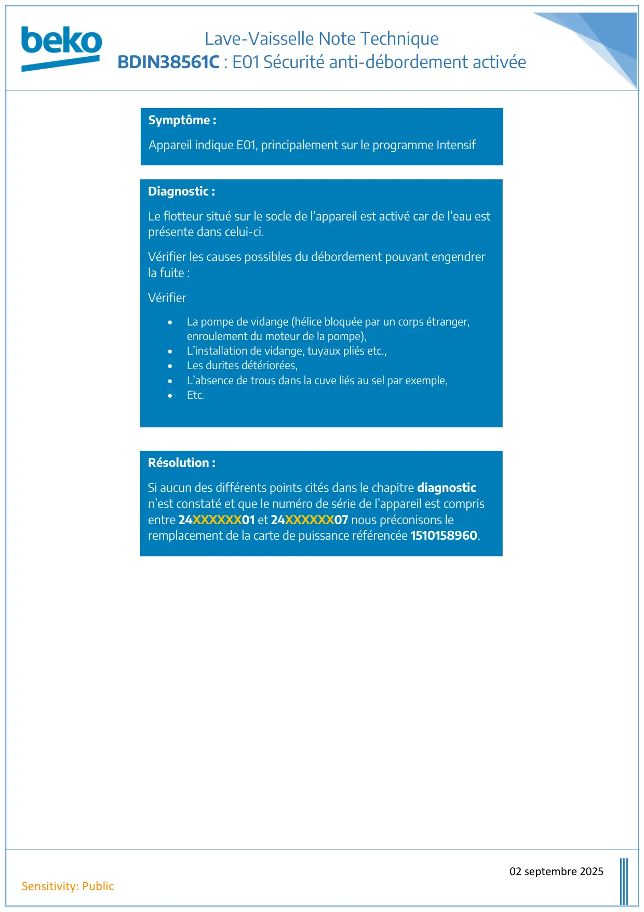

Note Technique lave vaisselle Encastrable BDIN38561C E01 sur Afficheur

Lave-Vaisselle Note TechniqueBDIN38561C : E01 Sécurité anti-débordement activée02 septembre 2025Sensitivity: PublicSymptôme :Appareil indique E01, principalement sur le programme IntensifDiagnostic :Le flotteur situé sur le socle de l’appareil est activé car de l’eau estprésente dans celui-ci.Vérifier les causes possibles du débordement pouvant engendrerla fuite :Vérifier•La pompe de vidange (hélice bloquée par un corps étranger,enroulement du moteur de la pompe),•L’installation de vidange, tuyaux pliés etc.,•Les durites détériorées,•L’absence de trous dans la cuve liés au sel par exemple,•Etc.Résolution :Si aucun des différents points cités dans le chapitre diagnosticn’est constaté et que le numéro de série de l’appareil est comprisentre 24XXXXXX01 et 24XXXXXX07 nous préconisons leremplacement de la carte de puissance référencée 1510158960.
1 / 1